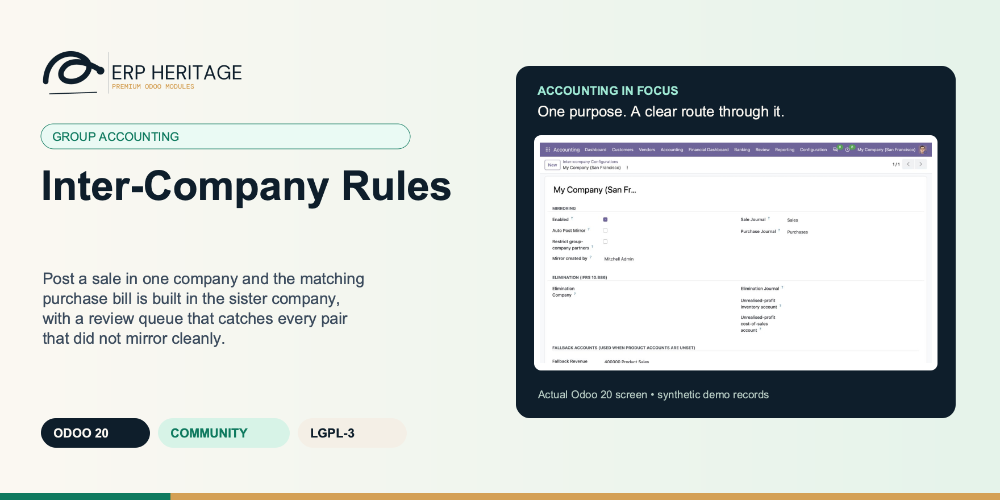
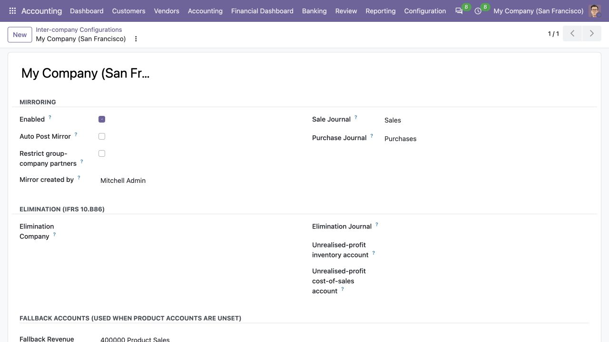
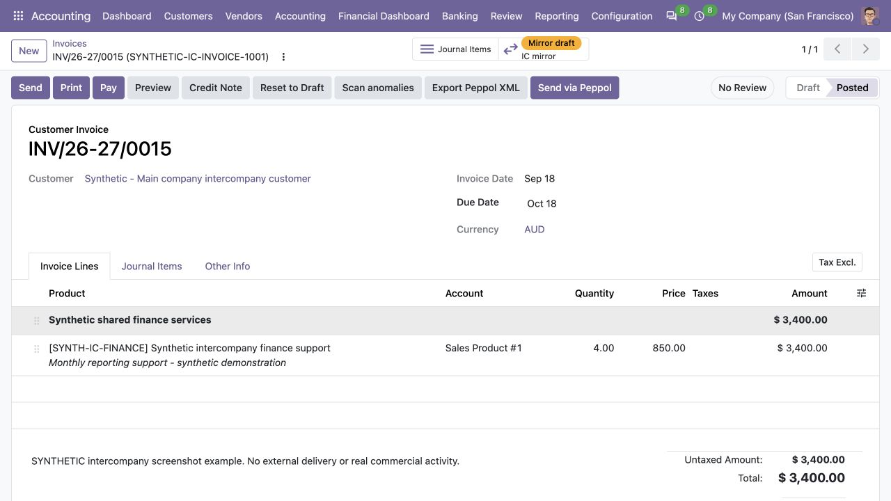
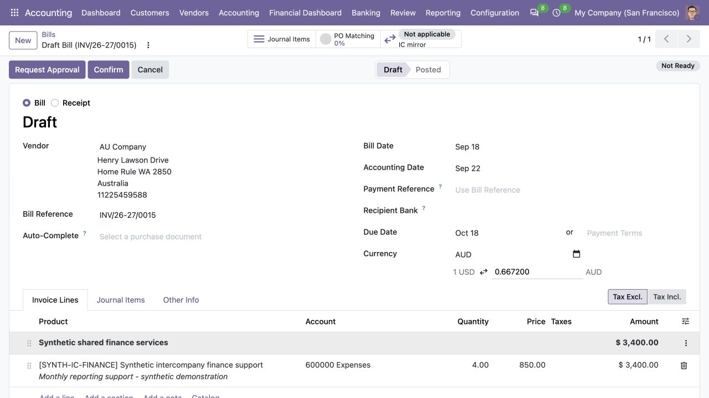

ERP HERITAGE / ODOO 20 COMMUNITY
Post a sale in one company and the matching purchase bill is built in the sister company, with a review queue that catches every pair that did not mirror cleanly.
LGPL-3 · Odoo 20 · v20.0.1.3.2 · Module guide, setup, workflows and rollout checks
The purpose
Inter-Company Rules automates the mirror leg of trade between related entities on Odoo 20 Community. When a sale invoice or vendor bill posts and its partner is linked to another company (through the partner's Represented Company field, or through its commercial partner's company) and that destination company has an enabled inter-company config, the module builds the matching mirror in the destination company. A posted customer invoice in company A becomes a purchase bill in company B; a vendor bill becomes a customer invoice; refunds mirror the same way. The mirror lands as draft for the receiving accountant to review, or auto-posts, per the destination company config.
Inside Odoo 20
Captured from Odoo 20 Community using synthetic demonstration records. Configuration screens show the available workflow; external service connectivity still requires the relevant provider setup and validation.

Enabled intercompany configuration selects transaction journals and fallback accounts while automatic mirror posting remains disabled.
Captured 2026-09-22 from isolated Odoo 20 Community database with synthetic demonstration records. No external submission or live banking activity is represented.

Posted synthetic customer invoice shows a draft mirror awaiting the receiving company’s review.
Captured 2026-09-22 from isolated Odoo 20 Community database with synthetic demonstration records. No external submission or live banking activity is represented.

System-created draft vendor bill carries the source invoice reference and the same AUD transaction amount.
Captured 2026-09-22 from isolated Odoo 20 Community database with synthetic demonstration records. No external submission or live banking activity is represented.
Inside this module
A posted sale invoice builds the matching purchase bill in the sister company, and a vendor bill mirrors back to a customer invoice. Refunds mirror the same way. The mirror lands draft for review or auto-posts, per destination company config.
Each mirror stores an origin pointer and a database-level unique(origin, company) constraint makes re-posting and concurrent posts idempotent. Two simultaneous posts cannot both create a twin bill, the constraint closes the race at the database.
A stored lifecycle state with list badges, search filters and a dedicated review action means a supervisor sees only the pairs needing attention: no mirror, mirror draft, or an amount mismatch above one cent once both sides are posted.
Two concurrent posts cannot both create a mirror. A database-level unique(origin, company) constraint closes the race that a search-before-create guard alone would lose, and a regression test exercises exactly that duplicate path.
If any step of the mirror build fails, the source invoice still posts, the explicit reason is written to its chatter, and the state flips to No mirror so the unmirrored pair surfaces in the review queue instead of blocking the close.
Once both legs are posted, a divergence above one cent (a manual edit, a missing line, FX drift) flips the pair to Amount mismatch for human review rather than being ignored.
The mirror line uses the destination company's product account first, then the configured fallback account, and if neither exists it raises an error naming the exact field to fix. No NULL account ever reaches a move line.
Tax is mapped to the destination by rate and direction, not by name. A source tax with no matching destination rate is dropped with a warning rather than substituting a wrong-rate tax that would distort GST or VAT.
From input to outcome
Map the sister-company relationships and verify destination-company products, taxes, accounts and allowed access. Gather company partner links, destination configuration, account and tax mappings, currencies and service-user access. Use a representative case with a known expected result so the team can separate configuration decisions from unexpected behaviour. Keep the supporting commercial or accounting evidence available during review.
Post a supported source transaction and inspect the linked counterpart created under the destination-company rules. Follow the record’s available actions in the order intended by the workflow. Review the selected company, relevant dates and any validation messages before continuing. If the source data changes, reassess the result against the updated evidence.
She posts a customer invoice from the trading company to a related entity. The partner names the company it represents, so the module immediately builds the matching vendor bill in that entity, in the same currency and with the same per-line amounts, and links both invoices with a chatter note pointing at each other. The bill lands in draft for the receiving accountant to review. Later a colleague edits a mirror line by hand; the next time both sides settle, the divergence above one cent flips the pair to Amount mismatch and it surfaces in the Inter-company review action. One destination journal was left unset on a third company, so that mirror could not build, but the source still posted and the reason is sitting in its chatter, flagged No mirror in the same review queue. Nothing was double-entered, and nothing went missing quietly.
Review commercial values, currency treatment and provenance on both sides before completing destination processing. Compare the outcome with the expected treatment for this case and record the reason for any difference that requires follow-up. Give exceptions an owner so they do not disappear inside a period-end spreadsheet.
Resolve configuration failures through the responsible company owners and use the linked correction process for changes to mirrored transactions. Include the accepted operating example, configuration choices and unresolved dependencies in the handover. Review them when business policy, source data or the surrounding Odoo applications change.
Business situations
Inter-Company Rules is relevant to group accountants and multi-company administrators who need to answer this question: How can one company’s transaction create the correct counterpart without a duplicate or hidden cross-company mismatch? Start with the process that creates the decision, identify its owner and agree what evidence the reviewer needs. A narrow pilot helps the team evaluate the supported workflow using its own accounting data before broadening access.
Use the module’s group accounting role as one part of a controlled close. Bring the relevant company partner links, destination configuration, account and tax mappings, currencies and service-user access to the review, then explain the result alongside the business event it represents. Establish which outputs become part of the reporting pack and which outstanding matters need a separate accounting decision.
Turn the business question into an acceptance case: How can one company’s transaction create the correct counterpart without a duplicate or hidden cross-company mismatch? Use one ordinary example and one relevant exception from the supported scope below. Ask the intended operator to prepare it and the reviewer to explain the result. Retain that accepted example with the deployment notes so future changes can be assessed against an understood process.
Before the first result
Confirm that the organisation needs the supported group accounting process described here. Identify the responsible group accountants and multi-company administrators and write down the decision they expect the module to support. Use the limitations section to separate shipped behaviour from an integration, professional judgement or operational service that needs another owner.
Prepare company partner links, destination configuration, account and tax mappings, currencies and service-user access. Check the relevant records in the intended company and use dates that match the business event. Resolve missing accounting configuration before evaluating calculated output; plausible-looking totals do not establish that the chosen inputs or policies are correct.
This module declares Accounting Suite Base as part of its installation foundation. Its direct standard-Odoo dependencies are account. Review the actual dependency set in the target database before a rollout, especially where another addon also extends the same accounting models, menus or posting actions.
Define who operates Inter-Company Rules, who reviews unusual results and who maintains configuration. Run the representative workflow below in a test database using the intended users. Confirm that users can reach the work they own and that the reviewer understands the available evidence before moving the process into live operation.
Workflow reference
The linkage is duplicate-proof. Each mirror stores an origin pointer back to its source, and a database-level unique constraint on (origin, company) makes re-posting and concurrent posts idempotent, so two simultaneous posts cannot both slip past the search-before-create guard and create twin bills. A stat button jumps from either side to its counterpart, switching company context automatically.
Mirroring is non-blocking by design. The source posts first; the mirror is built immediately after inside a guarded step. If any part of the mirror build fails (a missing destination journal, an unresolvable account), the source still posts, the explicit failure reason is written to the source invoice chatter, and the move's inter-company state flips to No mirror so the unmirrored pair shows up in the review-queue filter instead of being silently lost. A missing or disabled inter-company config is simply treated as mirroring-off and skipped.
A stored lifecycle state (Not applicable, No mirror, Mirror draft, Amount mismatch, Matched) drives list badges, search filters, and a dedicated Inter-company review action, so a supervisor sees only the pairs that need attention. Once both legs are posted, a divergence above one cent (from a manual edit, a missing line, or FX drift) flips the pair to Amount mismatch for a human to resolve.
The mirror line build is deliberate. The destination account resolves in priority order: the destination company's product account first, then the configured fallback account, and if neither exists it raises a clear error naming the exact field to fix, so no NULL account ever reaches a move line. Tax is mapped by rate and direction (not by name), and an unresolved source tax is dropped with a warning rather than substituting a wrong-rate tax that would distort GST or VAT. Analytic distribution is carried across but company-scoped, so group-wide analytic accounts survive on the mirror while source-company-only analytic accounts are stripped and never leak into the destination company.
The mirror is created with sudo and the destination company context, the standard Odoo pattern for cross-company writes, without broadening the user's own permissions. A Represented Company field on the partner keeps the counterparty partner globally usable on invoices in every company.
The elimination pair engine (IFRS 10.B86) closes the loop from mirroring to group accounting. An elimination batch takes a company pair and a period, matches posted inter-company pairs through the origin linkage, reconstructs each receivable/payable residual as of the reporting cutoff from accounting-dated partial reconciliations, and aggregates reciprocal outstanding balances across invoices, payments and credit notes. Revenue and expense remain scoped to accounting dates inside the period. All amounts are compared after translating member functional-currency balances into the elimination currency. Missing, late or divergent counterparts land on a mismatch tab; posting is blocked unless a manager uses the tracked override, and only the common reciprocal amount is eliminated. Posting books one balanced, sealed journal entry in a distinct non-trading company explicitly marked as a consolidation-only elimination workspace; either member legal entity is rejected so the parent's or subsidiary's separate statutory financial statements are never misstated. Balance-sheet legs are the delta from earlier active batches for the same pair, so successive monthly closes leave one current outstanding-balance elimination in the persistent consolidation ledger instead of accumulating gross period-end balances. Accounts map into the consolidation chart by code and missing mappings fail loudly. Reset reverses the sealed entry; successor and overlapping-period guards protect the delta chain, while unique pair/period and compute-time replacement keep the lifecycle idempotent.
Unrealised profit in ending inventory is computed from source documents, never hand-typed. For every matched pair whose selling side is a customer invoice, margin per exact source invoice line uses selling-company functional-currency cost captured immutably when source posts; later product-cost changes cannot rewrite history. A manager approves remaining fraction against a dated period-end workpaper tracing units to that exact inter-company line. Aggregate current stock quants are deliberately never used because they can include third-party purchases, double-allocate one on-hand balance across invoices, and do not reconstruct reporting cutoff.
Consolidation hook: eh ic elimination summary(Period from, Period to, Companys=None) on Inter-company elimination batch returns structured totals (receivable and payable eliminated, revenue and expense eliminated, unrealised profit, mismatch count, and one row per batch). Same unrealised target is booked once as a point-in-time inventory/cost-of-sales delta in sealed elimination ledger; summary consumers report it without posting duplicate restatement.
A posting-time guard (Restrict group-company partners, off by default) catches mis-keyed inter-company transactions: with the flag on, posting an invoice or bill towards the raw partner record of another group company that is not flagged with a Represented Company is refused before anything books, because such a document would bypass the mirror and the elimination engine.
Analytic distribution is carried to the mirror but company-scoped. Group-wide analytic accounts survive on the mirror line while source-company-only analytic accounts are stripped, so they never leak into the destination company.
A Represented Company field lets the counterparty partner stay global and remain usable on invoices in every company, sidestepping the standard company-consistency guard.
When a sale invoice or vendor bill posts and its partner is linked to another company (via Represented Company, or the commercial partner's company) and that destination company has an enabled config, the mirror is built in the destination company. Refunds mirror too.
One config row per company selects that company's mirror sale and purchase journals, the auto-post behaviour, and optional fallback income and expense accounts. The routing target comes from the partner's Represented Company, not a per-pair rule.
An origin pointer plus a database-level unique(origin, company) constraint make re-posting and concurrent posts idempotent. A stat button jumps from either side to its counterpart, switching company context automatically.
A stored lifecycle state (Not applicable, No mirror, Mirror draft, Amount mismatch, Matched) drives list badges, search filters and a dedicated Inter-company review action so a supervisor sees only pairs needing attention.
The mirror is created in the same currency as the source invoice with the same per-line amounts. It does not convert the amounts into the destination company's currency; both legs stay in the source currency.
The mirror is created with sudo and the destination company context, the standard Odoo pattern for cross-company writes, without broadening the user's own permissions. Both invoices carry a chatter note linking to their counterpart.
When this move is the auto-generated mirror of an inter-company source invoice, this field points at that source. Used to prevent duplicate mirrors when the source is re-posted.
Lifecycle of the inter-company mirror for this move. Operations teams use this to spot pairs where the destination accountant has not yet posted the mirror, or where the totals diverge after a manual edit on either side. Stored so the review-queue search filter can use a plain domain on the field.
First company of the pair whose inter-company move pairs this batch matches and eliminates. The pair is unordered: a batch for (A, B) also covers documents that originate in B towards A.
Dedicated non-trading consolidation workspace where the elimination journal is booked. It must be distinct from both member legal entities and explicitly marked Consolidation-only. Every account touched must exist there by code.
When set (the default), posting is refused while the batch carries mismatched or unmatched pairs. A manager can clear this flag to post the matched eliminations anyway; the override is tracked in the chatter and the mismatches stay listed for follow-up.
Pairs that did not reconcile: no mirror, mirror still in draft, or totals diverging beyond one cent. Each row carries the reason; posting is blocked while rows exist unless Block on mismatch is cleared.
Unrealised profit in inventory per product line of the matched inter-company sale invoices. The margin is always derived from the invoice against the product standard cost; only the remaining fraction is manual when the stock module is not installed.
The latest sealed elimination journal entry posted in the elimination company. Reset to draft reverses it but never deletes either side of the accounting evidence.
Unrealised profit in ending inventory computed from the matched inter-company sale invoices. Booked once as a point-in-time inventory/cost-of-sales delta and exposed to the consolidation summary as the same target.
Exact inter-company sale line whose margin and inventory evidence this row represents. This identity prevents one product balance being reused across several invoices.
Fraction of this exact invoiced quantity still held by the buyer at period end (0 to 1), supported by dated inventory provenance evidence.
The company this config governs. When an invoice posts in this company, the trigger checks the partner's Company to decide whether to mirror.
Journal used when this company is the destination of a mirror that originated as a vendor bill (so the mirror here is a customer invoice). Required when vendor bill and in refund mirrors should land here.
Journal used when this company is the destination of a mirror that originated as a customer invoice (so the mirror here is a vendor bill). Required when customer invoice and customer credit note mirrors should land here.
When set, mirrors created on this company are posted automatically. Default off so the receiving accountant reviews each mirror in draft state.
Used on mirror BILL lines (vendor bill/in refund) when the source line's product has no expense account configured in this company. Hard fail at post time if neither this fallback nor the product account is set.
Used on mirror INVOICE lines (customer invoice/customer credit note) when the source line's product has no income account configured in this company. Hard fail at post time if neither this fallback nor the product account is set.
When set, mirror documents in this company are created and posted as this user (instead of the elevated system context), so ownership and the audit trail name a real responsible user. The user needs access to this company and to accounting. Leave empty to create with elevated rights.
When set, posting an invoice or bill IN THIS COMPANY whose partner is another company of the group (the partner record of a company) without the Represented Company flag is refused. This catches inter-company transactions keyed against the raw company partner, which would bypass mirroring and the elimination engine. Off by default so existing flows are unchanged.
Dedicated non-trading consolidation entity where elimination batches book. It must be marked Consolidation-only; a parent or subsidiary legal entity is not a valid elimination workspace.
Dedicated journal in the elimination company the elimination entries are booked to. Auto-created on first use (code ICEL) when left empty on the elimination company's configuration.
Marks this company as a non-trading consolidation workspace. Inter-company elimination journals may be posted only here, never in either member company's statutory general ledger. Do not enable this on a legal entity that issues separate financial statements.
When set, posting an customer invoice for this partner triggers an inter-company mirror as a vendor bill in the named company. Leave blank if the partner is a regular customer.
Illustrative implementation exercise. Company A invoices Company B. Before posting the source, review the company-partner relationship, destination resolution and configured access. Inspect the generated destination document for the intended vendor, product, tax treatment, currency and reference. A matching gross amount alone does not prove that both companies have the correct accounting treatment. Repeat the source processing in a test scenario to review duplicate prevention and inspect a deliberate missing-mapping case. Confirm that the problem becomes explicit rather than creating a partial commercial result that staff cannot explain. Use the linked correction procedure for changes and retain references on both sides for reconciliation.
Questions before rollout
It is designed for group accountants and multi-company administrators. Its central business question is: How can one company’s transaction create the correct counterpart without a duplicate or hidden cross-company mismatch? The listing describes the shipped operating scope and the decisions that remain with the organisation. Evaluate it against your own records and review process, rather than treating the module name as a promise to cover every scenario in that accounting area.
Have company partner links, destination configuration, account and tax mappings, currencies and service-user access ready, together with the person who owns the related accounting policy. Map the sister-company relationships and verify destination-company products, taxes, accounts and allowed access. A known example makes it possible to check the result and resolve configuration questions before the process is repeated across more records or companies.
Review commercial values, currency treatment and provenance on both sides before completing destination processing. Keep the relevant source evidence with the output and be explicit about company, date and policy choices. The most useful review asks whether the result follows from the business inputs, not only whether the operation completed without a validation message.
It belongs to the group accounting family. Its declared custom dependency foundation is Accounting Suite Base. Installing the complete suite also brings other operating and specialist modules; using this focused module should be evaluated against its own dependency list and scope. Optional services still need their own configuration and agreement where applicable.
Mirroring does not convert currency. Both legs are created in the source invoice currency with the same per-line amounts; there is no day-rate conversion into the destination company's currency. Resolve configuration failures through the responsible company owners and use the linked correction process for changes to mirrored transactions.
No. Inter-Company Rules provides the specific records, calculations or workflow described in this listing. The organisation remains responsible for its source information, accounting choices, supporting evidence and review. Where the process uses an estimate, a contract assessment or an external service, appoint the appropriate owner before relying on the output.
Scope and requirements
Mirroring does not convert currency. Both legs are created in the source invoice currency with the same per-line amounts; there is no day-rate conversion into the destination company's currency.
Routing is partner-driven, not a per-company-pair rule. The destination is derived from the partner's Represented Company and each company has its own config; there is no sender-receiver-journal pair object.
The mirror is not atomic with the source post. The source posts first and a mirror failure does not roll it back; the failure reason is recorded on the source chatter and flagged in the review queue for the accountant to resolve.
A missing or disabled inter-company config is treated as mirroring-off and skipped silently, with no error raised.
This module does not perform group consolidation or elimination entries; it builds the mirror invoice pair only. The only audit trail is the chatter note linking each invoice to its counterpart, not a separate append-only log model.
Standards references describe the accounting subject addressed by the module. They do not establish certification, statutory filing acceptance or suitability for every jurisdiction. Your finance team owns its assumptions, accounting policies and review.
Installation scope
Odoo installs the following direct dependencies automatically. Additional dependencies can be brought in by those modules. Related modules in the wider catalogue are optional unless they appear in this dependency chain.
Shared reporting engine for the ERP Heritage Odoo 20 Community accounting suite, providing a reproducible report-execution audit log and a move-version result cache. Append-only audit log of every report render with user, timestamp, the full options snapshot, runtime, and a SHA-256 result hash for XLSX and PDF output, plus a multi-company analytic-aware parameterised SQL builder with no raw user input in SQL, a three-tier User/Manager/read-only Auditor privilege model, and a currency-aware XLSX writer. Odoo 20 Community accounting reporting engine, reproducible financial report audit trail, move-version report cache invalidation, multi-company parameterised SQL builder, append-only audit log, read-only auditor role, SHA-256 report hash compliance, currency-aware XLSX export, analytic-aware journal item aggregation.
Included dependency: eh_account_base. The shared reporting engine under the ERP Heritage accounting modules: an append-only render audit log, precise per-company cache invalidation, and a whitelist-only parameterised SQL builder.
Odoo Community dependency required by this module. Its own dependencies and configuration remain part of the installation scope.
Acceptance guide
The following are recommended rollout checks, not claims of additional built-in features. Apply the checks relevant to this module and retain evidence of your own results.
Select a recent, closed period that your finance team understands well. Keep its approved source documents, ledger totals and existing working papers available. Reproduce that period in a staging database before working on current transactions. A familiar period makes differences visible: you can distinguish an opening balance problem from a configuration choice, a timing difference or a genuine defect. Agree which person owns each discrepancy and what evidence will close it. Successful installation is the starting point; a repeatable business outcome is the acceptance criterion.
Write down the output your team needs from this module: a reviewed transaction, an exported file, a reconciled balance, an approved schedule or an operational queue. Identify who prepares it, who reviews it and who relies on it next. Make the scope concrete with one company, one reporting period and a small representative document set. Include an ordinary case and an exception. This keeps the evaluation focused on the business decision instead of the number of available screens, and gives reviewers a consistent way to compare the new workflow with their current process.
Use the Odoo 20 edition of the module and its dependencies together. The manifest defines what Odoo installs automatically; a feature mentioned elsewhere in the wider product family is not automatically included. Review the dependency guide on this page before enabling the complete suite, especially where your deployment also uses Sales, Purchase, Inventory or website components. Confirm that your hosting arrangement accepts custom server modules and their Python requirements. Keep a copy of the installed module versions with your acceptance record so a later update can be checked against the same baseline.
Check the companies, currencies, fiscal periods, journals, accounts and partner records used by your sample. Confirm that account purposes agree with your chart of accounts and that archived records are not being selected inadvertently. Review company-specific settings while the intended company is active. Where a workflow needs bank details, analytic dimensions, product information or payment terms, validate those inputs with their owner. Clean master data reduces repeated exceptions and makes it easier to investigate the exceptions that remain. Keep the preparation list short enough for someone else to repeat it.
Decide which source establishes the opening position before introducing new transactions. Save the source date, company, currency and supporting reconciliation. If a module maintains a schedule or a working-paper balance alongside the ledger, document how that opening amount should tie to the general ledger. Do not use balancing entries to hide a difference during the pilot. Classify the difference, correct its source and rerun the comparison. The resulting trail is useful both for your internal reviewer and for support if an unexpected calculation needs investigation.
Choose named users for preparation, review and administration. Confirm their practical access by signing in as those users in staging, rather than relying on an administrator's view of the menus. A visible menu does not replace model access or record restrictions, and a hidden menu does not by itself prove that data is protected. For your own acceptance check, verify the specific business operations each role needs. If your organization requires separation of duties, include that policy in the rollout criteria and check the actual workflow against it before granting production access.
Run the sample with the intended company selected, then repeat the relevant navigation and search checks as a user assigned to a different company. Record which company owns each source document and each generated result. For users who work across entities, confirm how their allowed-company selection affects totals and available records. Investigate any cross-company difference before it becomes a month-end problem. Group-level work and company-level work have different scopes; use the appropriate module and document the scope on the review evidence instead of assuming one screen represents both.
Include a company-currency case and, where relevant to the module, a foreign-currency case. Check the date used to select exchange rates and keep the rate source available to the reviewer. Add a transaction near a period boundary so the team can see whether document date, accounting date or another business date drives the result. Test decimal precision with a small amount as well as a large one. Record the expected rounding treatment. These checks turn vague differences in totals into questions that can be resolved against your accounting policy.
Choose one result and follow the available links or record references back to the original business document. Compare its company, partner, amount, currency and dates with the expected source. Where the workflow creates a journal entry, inspect the accounts and balancing lines before relying on an aggregate report. Where it exports a file, compare the file's records with the selected batch. Save a small, intelligible evidence set instead of an indiscriminate screenshot archive. A reviewer should be able to explain what happened without needing the original preparer beside them.
If this module creates or updates accounting entries, separate preparation from the decision to post in your operating procedure. Inspect the proposed outcome, resolve missing configuration and confirm the intended period before using a posting action. If the module does not post entries, identify the equivalent commitment point, such as sending a file or approving a review record. Record who is allowed to make that decision. The page describes the module's supported workflow; your team still needs an operating policy that fits its accounting responsibilities and approval structure.
From pilot to production
Use a deliberately incomplete sample in staging: a missing required setting, an unsuitable date or a source document that is not ready for the next step. Observe the actual message and the record state that remains. Correct the input and repeat the operation. Check that the recovered result agrees with the ordinary successful case. For transactions already committed, use the supported correction or reversal workflow rather than editing database records. Your acceptance record should explain how staff recover from mistakes, because that is part of day-to-day usability, not an unusual administrative task.
Repeat an import, calculation, preparation step or button action only where the documented workflow permits it. Confirm whether the expected behavior is a recalculation, a refusal, a new version or reuse of an existing record. Do not infer universal duplicate prevention from one successful test. Record the behavior of the actual operation your team will use and include it in staff guidance. A small, identifiable sample makes duplicate records easy to spot and avoids creating a misleading acceptance result from a large batch with poorly understood contents.
Where accounting dates are involved, inspect your company's lock settings and the role that can change them. Include one sample dated inside a closed period and one in the open period, then observe the supported behavior with normal finance access. Agree how the team will handle late documents and approved corrections. The goal is a clear route for legitimate work that preserves the reason the period was closed. Record the policy alongside the module's workflow so operators know when to stop and involve the person responsible for the close.
If the module produces reports or exchange files, have the intended recipient inspect a sample. For a finance report, check the filters, company, dates, currency, labels and totals. For a bank or service file, use that recipient's own validation or test process before a production submission. Generating a structurally valid file does not establish acceptance by every provider. Keep the exact sample and any recipient feedback with the rollout record. Where no export is provided, agree which supported screen or linked record serves as the handover evidence.
Identify any step that depends on a separately configured provider, connector, credential or commercial service. Confirm the exact adapter and its requirements before scheduling a live demonstration. Some family modules provide deterministic rules or file preparation without a live external connection; their usefulness should be evaluated on that basis. Test a provider failure in staging only when the adapter offers a safe test route. Make it clear who manages credentials and provider subscriptions, and who should be contacted when an external service is unavailable.
Time the operations your staff will actually repeat, using a dataset that resembles your expected company, date range and document volume. Record the environment and sample size beside the timings. Include navigation, filtering, preparation and review rather than quoting a single best-case page load. This page makes no universal performance promise: network latency, database size, customizations and infrastructure affect results. Use measurements to choose a practical rollout batch size and to identify any operation that needs investigation before more users join the workflow.
Give staff a short exercise that begins with a business situation and ends with a reviewed result. Include the expected amount or state, the navigation route, the point at which a reviewer becomes involved and the supported correction route. Let operators explain why their result is correct. Add only the settings and exceptions relevant to their role. A concise internal playbook built from your own pilot is easier to maintain than a large collection of unannotated screenshots, and it helps new users understand the relationship between this module and the rest of Accounting.
Capture the module version, Odoo version, affected company, operation, exact message and a minimal sequence of steps. Use redacted sample documents when sharing evidence outside your organization. State the expected result and the actual result separately. Include the date filters and role used, because the same record can look different with another scope or set of permissions. Never include passwords, API tokens or private keys in a support message. Good reproduction details allow the problem to be investigated without guessing at your business setup or asking staff to repeat a full close.
Before deploying an update, back up the database and filestore together, and restore that backup into an isolated environment. Apply the module update there, then repeat the key pilot scenarios using the saved acceptance record. Check that existing documents remain readable and that the expected actions and menus still lead to the right workflow. Include one newly created record as well as an older one. Keep a rollback plan appropriate to your deployment and confirm that the backup can be restored before scheduling the production change.
Agree the release criteria before the pilot ends: expected financial results, access boundaries, supported corrections, output acceptance and owner sign-off. List unresolved items with their business impact instead of treating every observation as a blocker or dismissing it as cosmetic. Start production with a manageable scope and a named reviewer. Keep the first cycle's evidence so that later enhancements can be assessed against a concrete baseline. App-store descriptions help you select and understand the module; acceptance in your own configuration establishes whether the workflow is ready for your team.
Connected capabilities
These related modules explain how this workflow connects to the wider accounting process. Only the dependencies declared above are installed automatically. Choose optional additions for a specific business need.
The shared engine that powers the ERP Heritage accounting modules for Odoo 20 Community. It auto-installs as a dependency of any ERP Heritage accounting module, so you do not need to install it by hand.
This module adds two IFRS mechanics a plain ledger does not carry. On the IFRS 3 side it computes goodwill as consideration transferred (including the acquisition-date fair value of contingent consideration) plus non-controlling interest plus any previously-held interest less the fair value of identifiable net assets acquired, recognises a bargain purchase gain when that arithmetic is negative, and posts a full purchase price allocation that keeps consideration, non-controlling interest and previously-held interest distinct. The simple goodwill path is restricted to acquisitions without NCI or a previously-held interest. Step acquisitions remeasure the previously-held interest to fair value with the gain or loss posted to profit or loss. Measurement-period adjustments track acquisition-date retrospective effect, information-known date and exact accounting date separately; they can post auditable IFRS 3.49(b) depreciation/amortisation catch-up to current profit or loss or an approved comparative equity account. Liability-classified contingent consideration is remeasured to fair value through profit or loss in chronological order, while equity-classified contingent consideration is never remeasured. On the IAS 28 side an investment can be posted at cost or adopted from an exact posted opening entry without duplicating cash. It rolls forward for profit or loss, dividends and impairment, supports proportional disposal while the equity method continues, and on cessation recognises retained-interest fair value plus signed OCI/CTA recycling. Posting actions are manager-gated, entries are sealed, and disposal memorandum fields preserve carrying amount, proceeds, retained fair value, OCI and closed unrecognised losses.
Define a consolidation entity once: presentation currency, root company, and the list of member companies with ownership percentage and method (full, equity, or proportional). Each period, run a consolidation. The engine pulls every member's posted balances, translates them to the presentation currency, eliminates intercompany positions, computes non-controlling interest where ownership is below 100 percent, and writes the IAS 21 currency-translation-adjustment difference so the consolidated set balances.
Extends the ERP Heritage inter-company engine from invoice and move mirroring to sales and purchase orders, completing the multi-company order cycle.
ERP Heritage Community Accounting Pro installs a fixed collection of 50 direct accounting dependencies. Together with the suite itself and the transitive EH EDI Core foundation, its custom-module closure contains 52 modules. The collection brings reporting, reconciliation, payments, receivables, approvals, specialist accounting, group work and close controls into one Community installation. Its value comes from connecting those processes and their evidence; adoption still requires deliberate company configuration, accounting ownership and review. Australian BAS is available separately and installs the suite as its accounting foundation.
ERP Heritage
Start with the workflow, setup and acceptance guide above. For implementation or support, share your Odoo version, module version, business scenario and a redacted example. Keep credentials and personal data out of support messages.
Published by ERP Heritage. Odoo is a trademark of Odoo S.A.; this independently developed application is not an Odoo S.A. product or endorsement.
Package: eh_account_intercompany · Release: v20.0.1.3.2 · License: LGPL-3.